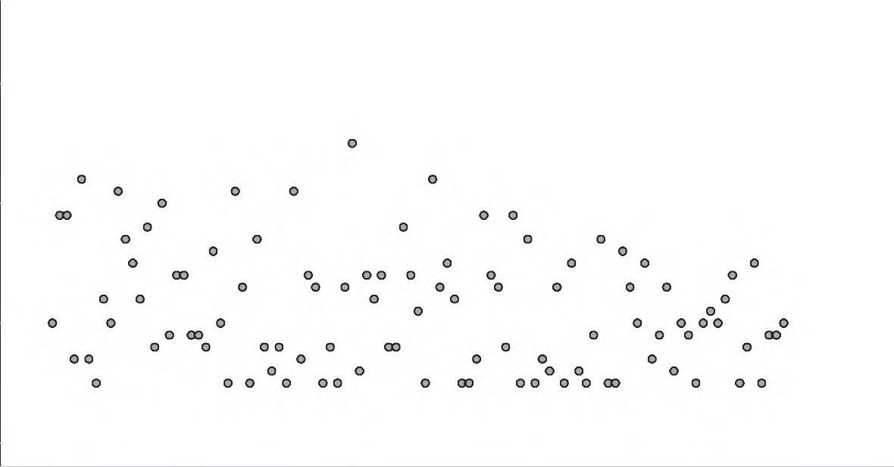

1Department of Pharmacy, Affiliated Hospital of Jiangnan University, Wuxi 214000, China; 2Wuxi Drug Safety Inspection and Testing Center, Wuxi 214000, China; 3Department of Pharmacy, Wuxi Maternity and Child Health Care Hospital, Women’s Hospital of Jiangnan University, Wuxi 214000, China
ABSTRACT Objective: Docetaxel has a narrow therapeutic window and large inter-individual pharmacokinetic variability. Through a prospective study, this project aimed to determine the safety window of the steady-state area under the concentration–time curve (AUC) of docetaxel in breast cancer patients and the correlation between steady-state AUC and the occurrence of myelosuppression. Methods: A total of 101 patients with pathologically diagnosed stage I–III breast cancer receiving adjuvant or neoadjuvant chemotherapy from June 2019 to June 2021 were selected, and the steady-state AUC of docetaxel was measured, calculated and analyzed. Results: The reference range of the docetaxel safety window was a steady-state AUC of 1–1.6 mg·h·L−1. Within this range, no severe myelosuppression was observed, and the incidence of grade I–II myelosuppression was 15.9%. When the reference range was 1.7–2.5 mg·h·L−1, the incidence of myelosuppression was 21.4%, and the incidence of severe myelosuppression was 14.2%; when the reference range was 2.6–3.0 mg·h·L−1, the incidence of myelosuppression was 66.7%. Among patients with a docetaxel steady-state AUC of 1–1.6 mg·h·L−1, there was no significant difference in the incidence of myelosuppression between those who did and did not receive granulocyte colony-stimulating factor (P > 0.05). Conclusion: The reference range of the docetaxel safety window is a steady-state AUC of 1–1.6 mg·h·L−1; within this reference range, prophylactic use of granulocyte colony-stimulating factor may be considered unnecessary for patients.
KEY WORDS Docetaxel; Area under the curve; Myelosuppression; Granulocyte colony-stimulating factor
CLC numberR969.1Document codeAArticle ID1673-7806(2023)05-425-05
DOI:10.13664/j.cnki.pcr.2023.05.004
Breast cancer is currently the most common malignant tumor in women; it seriously affects patients’ quality of life and poses a serious threat to their lives[1]. Adjuvant and neoadjuvant chemotherapy are important components of breast cancer treatment[2]. Docetaxel (DTX), a paclitaxel derivative, is commonly used in adjuvant and neoadjuvant chemotherapy for breast cancer and plays an important role in improving prognosis. However, compared with other taxanes, DTX causes more severe myelosuppressive adverse reactions. Studies have shown[3] that DTX, whether used in combination or alone, can cause febrile neutropenia (FN). To prevent FN, granulocyte colony-stimulating factor (G-CSF) is commonly used clinically for primary or secondary
prophylaxis; however, G-CSF can cause adverse reactions such as fever and bone pain, and may even increase the risk of hematological malignancies. Numerous studies in China and abroad have shown[4-6] that the area under the steady-state plasma concentration–time curve (AUC) of DTX is closely related to its hematological toxicity. However, although there are many studies on the correlation between AUC and the hematological toxicity of DTX, the predicted AUC ranges differ. There are differences in DTX pharmacokinetics (PK) between Asian and European/American populations[7]; for example, Japanese patients receiving DTX 60 mg·m−2 show higher hematological toxicity than European and American patients receiving 75–100 mg·m−2. A study by SUN N et al[8] set the optimal reference range of AUC for DTX in the treatment of solid tumors at 1.7–2.5 mg·h·L−1, but also pointed out that the optimal reference range of steady-state AUC for Asian patients has
not been established, as this range was set on the basis of the mean steady-state AUC of the population. Therefore, further research on the optimal steady-state AUC range of DTX is necessary, and the correlation between steady-state AUC and myelosuppression may provide a reference for clinically assessing the risk of hematological toxicity. Meanwhile, this project intends to explore whether patients with a lower steady-state AUC can avoid prophylactic use of G-CSF, so as to obtain pharmacoeconomic benefits and reduce adverse reactions.
This study was approved by the Medical Ethics Committee of Wuxi Maternity and Child Health Care Hospital. A total of 101 female breast cancer patients treated at the Affiliated Hospital of Jiangnan University from June 2019 to June 2021 were enrolled.
Case selection criteria: (1) pathological diagnosis of a malignant breast tumor, i.e. patients with stage I–III breast cancer after surgery receiving adjuvant or neoadjuvant chemotherapy; (2) chemotherapy with the A(E)C-T regimen [doxorubicin (epirubicin) plus cyclophosphamide followed by DTX 100 mg·m−2] or the TC regimen (DTX 75 mg·m−2 plus cyclophosphamide); (3) age between 20 and 80 years; (4) normal cardiac, renal, hepatic and pulmonary function; (5) performance status score of 0–2; (6) routine blood test results obtained 2–28 d after chemotherapy; if the test was repeated several times, the lowest result was taken as the myelosuppression result.
1.2.1 Treatment All patients received first-line chemotherapy with the A(E)C→T or TC regimen, with DTX given as a 1-h intravenous infusion on day 1 of each cycle; 21 days constituted 1 cycle.
1.2.2 Design of blood sampling points and therapeutic drug monitoring
Design of sampling points[4]: monitoring blood sample 1 was collected from 10 min before the end of the DTX infusion until the end of the infusion; monitoring blood sample 2 was collected within 30–60 min after the end of the DTX infusion. For both samples, 2–3 mL of blood was collected into EDTA anticoagulant tubes and centrifuged at 3000 r·min−1 for 10 min; 200 μL of plasma was transferred into a centrifuge tube and stored refrigerated at 2–8 °C until analysis. The blood sampling
time points were also recorded in detail for the calculation of steady-state AUC.
Assay method: plasma DTX concentrations after intravenous infusion were determined by latex immunoturbidimetry using a docetaxel assay kit [Fuxing Diagnostic Technology (Taizhou) Co., Ltd.], and the steady-state AUC of DTX was calculated with the MyCare drug exposure calculation software (Saladax).
1.2.3 Assessment of the correlation with hematological toxicity Post-chemotherapy myelosuppression was graded according to the World Health Organization criteria for acute and subacute toxicity of anticancer drugs, namely: grade 0: white blood cell count ≥ 4.0 × 109/L, neutrophil count ≥ 2.0 × 109/L, hemoglobin ≥ 110 g·L−1, platelet count ≥ 100 × 109/L; grade I: white blood cell count (3.0–3.9) × 109/L, neutrophil count (1.5–1.9) × 109/L, hemoglobin 95–109 g·L−1, platelet count (75–99) × 109/L; grade II: white blood cell count (2.0–2.9) × 109/L, neutrophil count (1.0–1.4) × 109/L, hemoglobin 80–94 g·L−1, platelet count (50–74) × 109/L; grade III: white blood cell count (1.0–1.9) × 109/L, neutrophil count (0.5–0.9) × 109/L, hemoglobin 65–79 g·L−1, platelet count (25–49) × 109/L; grade IV: white blood cell count < 1.0 × 109/L, neutrophil count < 0.5 × 109/L, hemoglobin < 65 g·L−1, platelet count < 25 × 109/L.
Hematological toxicity in the 101 patients was analyzed statistically to determine whether there was a correlation between steady-state AUC and hematological toxicity.
1.2.4 Assessment of granulocyte colony-stimulating factor use in patients within the safety window The difference in the incidence of myelosuppression between patients with and without G-CSF within the safety window was evaluated.
Data notes: (1) if a patient was in a myelosuppressed state before chemotherapy, the degree of myelosuppression after this course was defined as the post-chemotherapy grade minus the pre-chemotherapy grade; (2) for the steady-state AUC results of patients with low plasma concentrations, data below the lower limit of calculation could not be given a specific value and were recorded as steady-state AUC < 1 mg·h·L−1; in the statistical analysis these values were counted as 1.
Data were analyzed with SPSS 26.0 statistical software. Measurement data are expressed as (x ± s). Normally distributed data were compared with the t test
and non-normally distributed data with nonparametric tests, and comparisons among groups were made by one-way analysis of variance. P < 0.05 was considered statistically significant.
Data from a total of 101 patients were collected, with a mean age of (55.70 ± 10.58) years; 56 patients received A(E)C-T and 45 received TC. The clinical diagnosis was stage I–III breast cancer after surgery with adjuvant or neoadjuvant chemotherapy. The number of chemotherapy courses was 1–4 [for A(E)C-T, counted from the start of DTX]. G-CSF prophylaxis was not used in 11 patients, primary prophylaxis was given to 83 patients and secondary prophylaxis to 7 patients.
All patients completed the standard-dose intravenous infusion of DTX. The concentration of monitoring blood sample 1 ranged from 295 to 1300 ng·mL−1, and that of monitoring blood sample 2 from 34 to 345 ng·mL−1. As calculated, the steady-state AUC of the patients ranged from (<1.0–3.0) mg·h·L−1, with a mean of (1.59 ± 0.46) mg·h·L−1; the maximum inter-individual difference was greater than 3-fold (Figure 1). The coefficient of variation (CV%) of steady-state AUC among patients was 29%, indicating that the steady-state AUC of DTX plasma concentrations varies considerably under body-surface-area-based dosing.

3.52.51.50.5 020406080100Figure 1 Distribution of steady-state AUC in breast cancer patients
In this study, 89% of the patients received recombinant human granulocyte colony-stimulating factor (rhG-CSF) 2–5 μg·kg−1 or pegylated recombinant human granulocyte colony-stimulating factor (PEG-rhG-CSF) 6 mg after chemotherapy as primary or secondary prophylaxis; of these, 82.2% (83/101) of the patients received primary prophylaxis and 6.9% (7/101) received
secondary prophylaxis. The incidence of myelosuppression was 17.8% (18/101), and the incidence of severe myelosuppression was 5.9% (6/101). The difference in steady-state AUC between patients with grade 0–II and those with grade III–IV myelosuppression was statistically significant (P = 0.033): the steady-state AUC was (1.56 ± 0.46) mg·h·L−1 in patients with grade 0–II myelosuppression and (1.93 ± 0.17) mg·h·L−1 in those with grade III–IV. The steady-state AUC values of patients with different degrees of myelosuppression are shown in Table 1.
| Degree of myelosuppression | n | Proportion (%) | Steady-state AUC range (mg·h·L−1) |
|---|---|---|---|
| Grade 0 | 83 | 82.2 | < 1.0–2.4 |
| Grade I–II | 12 | 11.9 | 1.3–2.6 |
| Grade III–IV | 6 | 5.9 | 1.7–2.1 |
Steady-state AUC was grouped with reference to the DTX reference ranges provided with the docetaxel assay kit [Fuxing Diagnostic Technology (Taizhou) Co., Ltd.]. The company analyzed clinical data from 25 grade-A tertiary general hospitals and cancer specialty hospitals by the quartile method and divided DTX into < 1 mg·h·L−1, 1–1.6 mg·h·L−1, 1.7–2.5 mg·h·L−1, 2.6–3.0 mg·h·L−1 and > 3.0 mg·h·L−1 groups. Because no value > 3.0 mg·h·L−1 occurred in this study, the data were divided into < 1 mg·h·L−1, 1–1.6 mg·h·L−1, 1.7–2.5 mg·h·L−1 and 2.6–3.0 mg·h·L−1 groups for analysis. The correlation between steady-state AUC and the frequency of myelosuppression is shown in Table 2. Statistical analysis showed that the difference in the incidence of severe myelosuppression between steady-state AUC ≤ 1.6 mg·h·L−1 and steady-state AUC ≥ 1.7 mg·h·L−1 was statistically significant (P = 0.017), and that the difference in the incidence of myelosuppression among the different steady-state ranges was statistically significant (P = 0.006). Therefore, patients with a steady-state AUC ≤ 1.6 mg·h·L−1 have a lower risk of severe hematological toxicity. However, from the experience of therapeutic drug monitoring, an excessively low concentration may lead to insufficient efficacy; therefore, a steady-state AUC ≥ 1 mg·h·L−1 is recommended as the lower reference limit. In summary, the recommended range of the DTX safety window is 1–1.6 mg·h·L−1.
| Steady-state AUC reference range (mg·h·L−1) | Chemotherapy person-times | Prophylactic G-CSF (n) | Incidence of myelosuppression (%) | Incidence of severe myelosuppression (%) | |
|---|---|---|---|---|---|
| Yes | No | ||||
| <1 | 12 | 11 | 1 | 0 (0/12) | 0 (0/12) |
| 1–1.6 | 44 | 37 | 7 | 15.9 (7/44) | 0 (0/44) |
| 1.7–2.5 | 42 | 39 | 3 | 21.4 (9/42) | 14.3 (6/42) |
| 2.6–3.0 | 3 | 3 | 0 | 66.7 (2/3) | 0 (0/3) |
In this study, the 44 patients with a DTX steady-state AUC of 1–1.6 mg·h·L−1 were analyzed. Among the 7 patients who did not receive G-CSF, 1 developed myelosuppression; among the 37 patients who received G-CSF, 6 developed myelosuppression. The chi-square test gave P = 0.693.
According to the CSCO Guidelines for the Diagnosis and Treatment of Breast Cancer (2020)[2], the A(E)C-T (1A) and TC (1A) regimens are common postoperative adjuvant chemotherapy regimens for breast cancer, and DTX plays an important role in improving patient prognosis. However, the hematological toxicity of DTX is marked: it has been reported[2] that 23.4% of patients develop grade IV toxic and side effects during DTX chemotherapy, and this toxicity is dose-limiting[4]. At present, G-CSF can be used prophylactically against the severe myelosuppression caused by DTX, and the incidence of severe myelosuppression has therefore been greatly reduced (1%–7%)[9-11]. According to the Expert Consensus on the Diagnosis and Treatment of Chemotherapy-Induced Neutropenia (2019), patients receiving the TC or AC-T regimen who have high-risk factors may receive primary prophylaxis, whereas patients with previous FN may receive secondary prophylaxis. In this study, 89% of the patients received rhG-CSF or PEG-rhG-CSF after chemotherapy for primary or secondary prophylaxis, of whom 82.2% (83/101) received primary prophylaxis and 6.9% (7/101) received secondary prophylaxis. The incidence of myelosuppression was 17.8% (18/101) and that of severe myelosuppression was 5.9% (6/101). Compared with actual reported data on serious adverse reactions, these figures may be slightly higher than the actual clinical situation. A possible reason is that clinicians mostly order therapeutic drug
monitoring for patients with high-risk factors, so the incidence was slightly higher than the normal value.
With dosing based on body surface area (BSA), inter-individual variability can cause the steady-state AUC that characterizes the pharmacokinetics to differ by up to 7-fold and the total clearance (CL) to differ by up to 10-fold[12]. In this study, the maximum inter-individual difference was greater than 3-fold (Figure 1). Because some patients had a steady-state AUC < 1 mg·h·L−1, and because the DTX plasma concentrations in these patients were low and below the lower limit of calculation, so that no specific steady-state AUC value could be calculated, it could only be concluded that the maximum inter-individual difference was greater than 3-fold. The CV% of steady-state AUC among the patients in this study was greater than 29%, indicating that the steady-state AUC of DTX plasma concentrations varies considerably under BSA-based dosing. The difference in steady-state AUC between patients with grade 0–II and those with grade III–IV myelosuppression was statistically significant.
There are many studies on the correlation between DTX dose and steady-state AUC, but the reported fluctuation ranges of steady-state AUC differ (Table 3). The reference range currently used in clinical practice is the 1.7–2.5 mg·h·L−1 recommended by the reagent company, but this range differs to some extent from clinical practice. The statistical results of this study indicate that the reference range of the steady-state AUC of DTX in breast cancer patients is relatively low, which better fits clinical practice. In addition, this study provides the frequency of myelosuppression for each segment of the reference range, so that physicians can assess patients according to the frequency of hematological toxicity and thus make more accurate predictions.
| Reference | n | Dose range (mg·m−2) | Steady-state AUC (mg·h·L−1) | CL (L·h−1·m−2)* | Race |
|---|---|---|---|---|---|
| EXTRA JM, et al[13] | 65 | 100 | 5.93 ± 1.79 | – | NA |
| BURRIS H, et al[14] | 58 | 5–115 | 5.9 ± 1.9 | 18.3 ± 5.4 | NA |
| TAGUCHI T, et al[15] | 27 | 10–90 | 2.44 ± 0.83 | – | Japanese |
| YAMAMOTO N, et al[16] | 29 | 60 | 2.66 ± 0.91 | 24.5 ± 6.4 | Japanese |
| ROSING H, et al[17] | 24 | 100 | 3.1 ± 0.9 | 34.8 ± 9.3 | NA |
| TEN TIJE AJ, et al[18] | 51 | 75 | 6.01 ± 3.23 | 15.4 ± 6.94 | White/ Black |
| MINAMI H, et al[5] | 69 | 60 | 2.68 | 29.4 | Japanese |
| Note: *The unit of CL in the study by MINAMI H, et al is L·h−1. | |||||
For patients with a steady-state AUC < 1 mg·h·L−1, no myelosuppression was observed, but a low steady-state AUC may affect efficacy[8]. The investigators next plan to study patients receiving neoadjuvant chemotherapy, in whom tumor shrinkage can be evaluated more directly, in order to analyze the association between steady-state AUC and efficacy. Considering both efficacy and the incidence of myelosuppression, this study recommends a DTX safety window of 1–1.6 mg·h·L−1 for breast cancer patients.
For patients with a DTX steady-state AUC between 1 and 1.6 mg·h·L−1, clinical pharmacists studied whether G-CSF prophylaxis could be avoided. The guidelines state that in patients at high risk of FN the risk of FN exceeds 20%, and in patients at intermediate risk of FN the incidence of FN is 10%–20%; therefore, about 80% of patients may still not need prophylactic G-CSF. In this study, analysis of the 44 patients with a DTX steady-state AUC of 1–1.6 mg·h·L−1 found no significant difference between the prophylactic G-CSF group and the non-prophylactic group. However, the number of cases was limited, and the investigators plan to further expand the sample size to confirm this view. rhG-CSF increases the economic burden on patients to some extent, especially PEG-rhG-CSF, which is expensive. With the updating of medical insurance policies, reducing the average cost per patient has become an important indicator in medical evaluation; if therapeutic drug monitoring can save medical costs for patients, this will facilitate the implementation of medical insurance policies. Meanwhile, the use of G-CSF may increase the risk of adverse reactions. According to the package insert of recombinant human granulocyte colony-stimulating factor for injection, 9.6% of patients may experience adverse reactions, most notably fever, back pain and bone pain. In addition, some studies suggest that the use of G-CSF in breast cancer patients may increase the risk of therapy-related hematological malignancies, including acute myeloid leukemia, myelodysplastic syndrome and acute lymphoblastic leukemia/lymphoblastic lymphoma[9]. If therapeutic drug monitoring can help patients avoid unnecessary G-CSF use, the risk of such serious adverse events can be reduced. In summary, this study considers the reference range of the DTX safety window to be a steady-state AUC of 1–1.6 mg·h·L−1; within this reference range, prophylactic use of granulocyte colony-stimulating factor may be considered unnecessary for patients.
This conclusion still needs to be evaluated with a further expanded sample size.
[1]SIEGEL RL, MILLER KD, JEMAL A. Cancer Statistics, 2017[J]. CA Cancer J Clin, 2017, 67(1): 7-30.
[2]HE Jie, LI Jin. Guidelines of the Chinese Society of Clinical Oncology (CSCO) for the diagnosis and treatment of breast cancer[M]. People’s Medical Publishing House, 2020: 5. (in Chinese)
[3]GU Haijuan, NI Meixin, WEI Rong, et al. Application of therapeutic drug monitoring of docetaxel in chemotherapy for advanced non-small cell lung cancer[J]. Pharmaceutical and Clinical Research, 2017, 25(3): 253-6. (in Chinese)
[4]ENGELS FK, LOOS WJ, VAN DER BOL JM, et al. Therapeutic drug monitoring for the individualization of docetaxel dosing: a randomized pharmacokinetic study[J]. Clin Cancer Res, 2011, 17(2): 353-62.
[5]MINAMI H, KAWADA K, SASAKI Y, et al. Pharmacokinetics and pharmacodynamics of protein-unbound docetaxel in cancer patients[J]. Cancer Sci, 2006, 97(3): 235-41.
[6]GOH BC, LEE SC, WANG LZ, et al. Explaining interindividual variability of docetaxel pharmacokinetics and pharmacodynamics in Asians through phenotyping and genotyping strategies[J]. J Clin Oncol, 2002, 20(17): 3683-90.
[7]BRUNO R, VIVIER N, VEYRAT-FOLLET C, et al. Population pharmacokinetics and pharmacokinetic-pharmacodynamic relationships for docetaxel[J]. Invest New Drugs, 2001, 19(2): 163-9.
[8]SUN N, SHEN B, ZHU J, et al. Clinical application of the AUC-guided dosage adjustment of docetaxel-based chemotherapy for patients with solid tumours: a single centre, prospective and randomised control study[J]. J Transl Med, 2020, 18(1): 226.
[9]JABAGI MJ, VEY N, GONCALVES A, et al. Risk of secondary hematologic malignancies associated with breast cancer chemotherapy and G-CSF support: a nationwide population-based cohort[J]. Int J Cancer, 2021, 148(2): 375-84.
[10]PAWLOSKI PA, LARSEN M, THORESEN A, et al. Pegfilgrastim use and bone pain: a cohort study of community-based cancer patients[J]. J Oncol Pharm Pract, 2016, 22(3): 423-9.
[11]MATTEO L, LUCIA DM, ANDREA B, et al. The five “Ws” for bone pain due to the administration of granulocyte-colony stimulating factors (G-CSFs)[J]. Crit Rev Oncol Hematol, 2014, 89(1): 112-28.
[12]MAO Yingjie, WANG Yalan, ZHANG Xuan. Pharmacokinetic and pharmacodynamic study of docetaxel in triple-negative breast cancer[J]. Journal of Basic and Clinical Oncology, 2017, 4(30): 319-22. (in Chinese)
[13]EXTRA JM, ROUSSEAU F, BRUNO R, et al. Phase I and pharmacokinetic study of Taxotere (RP 56976; NSC 628503) given as a short intravenous infusion[J]. Cancer Res, 1993, 53(5): 1037-42.
[14]BURRIS H, IRVIN R, KUHN J, et al. Phase I clinical trial of taxotere administered as either a 2-hour or 6-hour intravenous infusion[J]. J Clin Oncol, 1993, 11(5): 950-8.
[15]TAGUCHI T, FURUE H, NIITANI H, et al. Phase I clinical trial of RP 56976 (docetaxel) a new anticancer drug[J]. Gan To Kagaku Ryoho, 1994, 21(12): 1997-2005.
[16]YAMAMOTO N, TAMURA T, KAMIYA Y, et al. Correlation between docetaxel clearance and estimated cytochrome P450
activity by urinary metabolite of exogenous cortisol[J]. J Clin Oncol, 2000, 18(11): 2301-8.
[17]ROSING H, LUSTIG V, VAN WARMERDAM LJ, et al. Pharmacokinetics and metabolism of docetaxel administered as a 1-h intravenous infusion[J]. Cancer Chemother Pharmacol, 2000, 45(3): 213-8.
[18]TEN TIJE AJ, VERWEIJ J, CARDUCCI MA, et al. Prospective evaluation of the pharmacokinetics and toxicity profile of docetaxel in the elderly[J]. J Clin Oncol, 2005, 23(6): 1070-7.